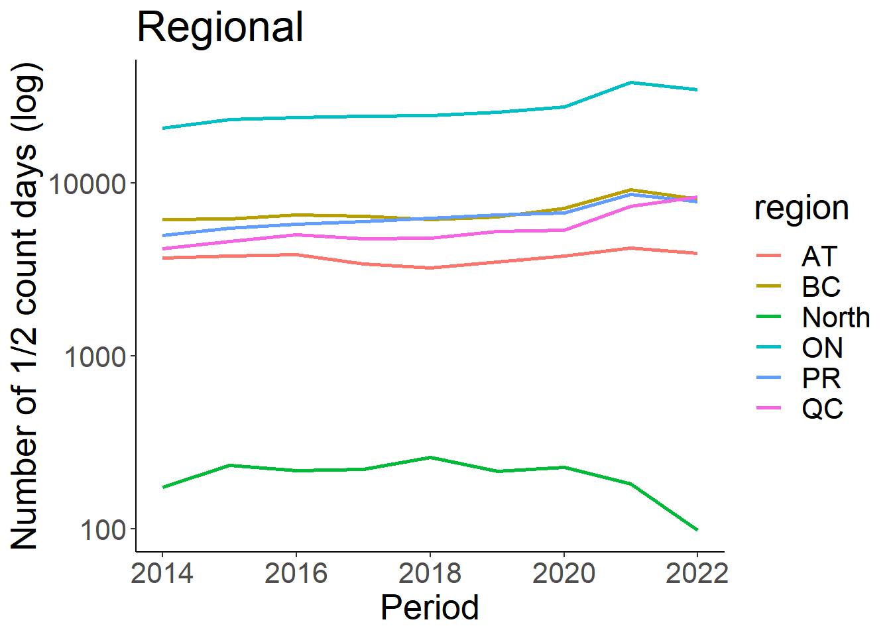
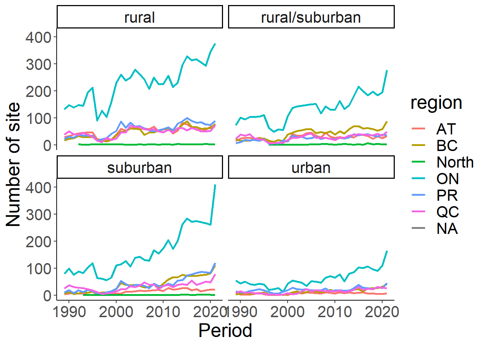

Chapter 5 Effort Statistics
Using the sampling Events tables we are going to generate some effort based summary statistics. These summary statistics are generated annually to support Birds Canada’s reporting for Canadian PFW participants, and can be used to correct for effort in more involve statistical analyses.
Let’s start this Chapter by reload our libraries and resetting our working directories in the event you took a break and are staring a new session with your newly filtered and cleaned data set.
require(tidyverse)
require(reshape)
out.dir <- paste("Output/")
dat.dir <- paste("Data/")
# Load datatables
event<-read.csv("Output/Events.csv")
# Recall there are two range tables. One for Atlas blocks and one for Provinces
blk<-read.csv("Output/Range_blockcode.csv")We will merge the Events table with part of the Range table first so that we have all the information we need in one dataframe.
blk<-blk %>% dplyr::select(loc_id, Prov, region, BlockCode) %>% distinct(loc_id, .keep_all = TRUE)
eff<-left_join(event, blk, by="loc_id")5.1 Number of Sites Monitored
First we will summarize the number of loc_id monitored in a year, regionally, provincially, and nationally. We will also plot these outputs since it is easy and interesting to look at.
loc_id_reg<-eff %>% group_by(region, Period) %>% summarize (n_loc = n_distinct(loc_id)) %>% drop_na()## `summarise()` has grouped output by 'region'. You can override using the `.groups` argument.ggplot(loc_id_reg, aes(x=Period, y=n_loc))+
geom_line(aes(colour=region), size=1)+
theme_classic()+
theme(text=element_text(size=20))+
ylab("Number of count sites (log)")+
ggtitle("Regional")+
scale_y_log10()loc_id_prov<-eff %>% group_by(Prov, Period) %>% summarize (n_loc = n_distinct(loc_id)) %>% drop_na()## `summarise()` has grouped output by 'Prov'. You can override using the `.groups` argument.ggplot(loc_id_prov, aes(x=Period, y=n_loc))+
geom_line(aes(colour=Prov), size=1)+
theme_classic()+
theme(text=element_text(size=20))+
ylab("Number of count sites (log)")+
ggtitle("Provincial")+
scale_y_log10()loc_id_nat<-eff %>% group_by(Period) %>% summarize (n_loc = n_distinct(loc_id)) %>% drop_na()
ggplot(loc_id_nat, aes(x=Period, y=n_loc))+
geom_line(size=1.5)+
theme_classic()+
theme(text=element_text(size=20))+
ylab("Number of count sites")+
ggtitle("National")+
geom_point(aes(x=2020, y=2172), colour="red", size=5)+
annotate("text", x = 2017, y = 2200, label = "COVID-19", colour="red", size = 5)write.table(format(loc_id_reg, digits=4), file = paste(out.dir,"Site Effort_reg.csv"), row.names = FALSE, col.name = TRUE, append = FALSE, quote = FALSE, sep = ",")
write.table(format(loc_id_prov, digits=4), file = paste(out.dir,"Site Effort_prov.csv"), row.names = FALSE, col.name = TRUE, append = FALSE, quote = FALSE, sep = ",")
write.table(format(loc_id_nat, digits=4), file = paste(out.dir,"Site Effort_nat.csv"), row.names = FALSE, col.name = TRUE, append = FALSE, quote = FALSE, sep = ",")5.2 Number of Effort Days Monitored
Next, we can look at the number of half days monitored. This has been consistently recorded since 2014, so we will truncate the Period to only include dates later then this.
days_reg<-eff %>% group_by(region, Period) %>% summarize (n_days = sum(Effort_days)) %>% drop_na() %>% filter(Period>=2014)
ggplot(days_reg, aes(x=Period, y=n_days))+
geom_line(aes(colour=region), size=1)+
theme_classic()+
theme(text=element_text(size=20))+
ylab("Number of 1/2 count days (log)")+
ggtitle("Regional")+
scale_y_log10()
days_prov<-eff %>% group_by(Prov, Period) %>% summarize (n_days = sum(Effort_days)) %>% drop_na() %>% filter(Period>=2014)
ggplot(days_prov, aes(x=Period, y=n_days))+
geom_line(aes(colour=Prov), size=1)+
theme_classic()+
theme(text=element_text(size=20))+
ylab("Number of 1/2 count days (log)")+
ggtitle("Provinical")+
scale_y_log10()
days_nat<-eff %>% group_by(Period) %>% summarize (n_days = sum(Effort_days)) %>% drop_na() %>% filter(Period>=2014)
ggplot(days_nat, aes(x=Period, y=n_days))+
geom_line(size=1)+
theme_classic()+
theme(text=element_text(size=20))+
ylab("Number of count 1/2 days (log)")+
ggtitle("National")+
scale_y_log10()5.3 Seasonal Effort
It might be interesting to look at seasonal changes in effort. For example, are more forms submitted at the beginning of the PFW season than the end? We can assess this using the sub_id, but will need to use the fully cleaned PFW data file for this task.
# Load data
data<-read.csv("Data/PFW_Canada_All.csv")
# Filter the dataframe
dat<-data %>% dplyr::select(loc_id, Prov, sub_id, Period, floor.week)
form_reg<-dat %>% group_by(Period, floor.week) %>% summarize(n_form=n_distinct(sub_id)) %>% drop_na()
ggplot(form_reg, aes(x=floor.week, y=n_form))+
geom_line(group=1)+
theme_classic()+
theme(text=element_text(size=20), axis.text.x=element_blank())+
ylab("Number of forms submitted weekly")5.4 Supplemental Information
In addition to observation counts of birds at PFW locations, there is a single file containing supplementary information about the count locations (sites). This information is submitted by users. This file can be downloaded from the Cornell Lab PFW website. Once it is saved in your Data folder, we can begin exploring patterns in counts and habitat metrics.
First, we will load the supplementary data and merge it to the site effort data previously compiled.
#change this file name to match what is used in your Data folder
hab<-read.csv("Data/PFW_count_site_data_public_2021.csv")
#separate the Period
hab<-hab %>%
separate(proj_period_id, c("del1", "Period"), sep="_", remove=FALSE) %>%
dplyr::select (-del1, -proj_period_id)
hab$Period<-as.integer(hab$Period)
eff<-left_join(eff, hab, by=c("loc_id", "Period"))The FeederWatch_Data_Dictionary.xls, saved in the project working directory, will give you more information about each covariate in the Site Description Field Details tab.
5.5 Housing and Population Denisty
Let’s summarize changes in housing density of the neighborhood reported over time, where 1 = “rural”, 2 = “rural/suburban”, 3 = “suburban”, 4 = “urban”.
house<-eff %>% select(loc_id, Period, housing_density) %>%
distinct() %>%
mutate(HouseDensity=ifelse(housing_density == 1, "rural", ifelse(housing_density ==2, "rural/suburban", ifelse(housing_density==3, "suburban", ifelse(housing_density==4, "urban", "NA")))))
house_sum<-house%>% group_by(Period, HouseDensity) %>% summarise(n_sites=length(loc_id)) %>% filter(HouseDensity!="NA")
ggplot(house_sum, aes(x=Period, y=n_sites))+
geom_line(aes(colour=HouseDensity), size=1)+
theme_classic()+
theme(text=element_text(size=20))+
ylab("Number of site")#This can also be summarized by Province or Region
house<-eff %>% select(loc_id, Period, region, housing_density) %>%
distinct() %>%
mutate(HouseDensity=ifelse(housing_density == 1, "rural", ifelse(housing_density ==2, "rural/suburban", ifelse(housing_density==3, "suburban", ifelse(housing_density==4, "urban", "NA")))))
house_sum<-house%>% group_by(Period, region, HouseDensity) %>% summarise(n_sites=length(loc_id)) %>% filter(HouseDensity!="NA")
ggplot(house_sum, aes(x=Period, y=n_sites))+
geom_line(aes(colour=region), size=1)+
facet_wrap(~HouseDensity)+
theme_classic()+
theme(text=element_text(size=20))+
ylab("Number of site")
Now let’s summarize changes population at least, summarized over time, where 1 = less than 5,000; 5001 = 5,001 - 25,000; 25001 = 25,001 - 100,000; 100001 = > 100,000. This will be compared visually to housing density to see if the two coincide.
pop<-eff %>% select(loc_id, Period, population_atleast) %>%
distinct() %>%
mutate(PopDensity=ifelse(population_atleast == 1, "< 5000", ifelse(population_atleast == 5001, "5000 - 25,000", ifelse(population_atleast==25001, "25,000 - 100,000", ifelse(population_atleast==100001, "> 100,000", "NA")))))
pop_sum<-pop%>% group_by(Period, PopDensity) %>% summarise(n_sites=length(loc_id)) %>% filter(PopDensity!="NA")
ggplot(pop_sum, aes(x=Period, y=n_sites))+
geom_line(aes(colour=PopDensity), size=1)+
theme_classic()+
theme(text=element_text(size=20))+
ylab("Number of site")#what if we rename these to be consistent with the housing density classifications
pop<-eff %>% select(loc_id, Period, population_atleast) %>%
distinct() %>%
mutate(PopDensity=ifelse(population_atleast == 1, "rural", ifelse(population_atleast == 5001, "rural/suburban", ifelse(population_atleast==25001, "suburban", ifelse(population_atleast==100001, "urban", "NA")))))
pop_sum<-pop%>% group_by(Period, PopDensity) %>% summarise(n_sites=length(loc_id)) %>% filter(PopDensity!="NA")
ggplot(pop_sum, aes(x=Period, y=n_sites))+
geom_line(aes(colour=PopDensity), size=1)+
theme_classic()+
theme(text=element_text(size=20))+
ylab("Number of site")5.6 Feeder Type
Another factor that could influence the types and number of birds counted is the feeder type and number. Let summarize those next.
feed<-eff %>% select(loc_id, Period, region, numfeeders_suet, numfeeders_ground, numfeeders_hanging, numfeeders_hopper, numfeeders_platfrm, numfeeders_tube, numfeeders_other, numfeeders_thistle, numfeeders_water, numfeeders_humming, numfeeders_fruit) %>% replace(is.na(.), 0) %>% distinct() %>% group_by(loc_id, Period) %>% mutate(TotFeederType = sum(numfeeders_suet + numfeeders_ground + numfeeders_hanging + numfeeders_hopper + numfeeders_platfrm + numfeeders_tube +numfeeders_other + numfeeders_thistle + numfeeders_water + numfeeders_humming + numfeeders_fruit))
# Remove 0 from total counts. Assume this is just missing data.
feed<-feed %>% filter(TotFeederType != 0)
feed_sum<-feed %>% group_by(Period, region) %>% summarise(MeanFeeder = mean(TotFeederType), TotalFeeder = sum(TotFeederType))
feed_sum<-feed_sum %>% filter(region!="North")
ggplot(feed_sum, aes(x=Period, y=MeanFeeder))+
geom_line(aes(colour=region), size=1)+
theme_classic()+
theme(text=element_text(size=20))+
ylab("Mean number of feeders")#the total number of feeders is going to be correlated with the total number of sites being monitored
ggplot(feed_sum, aes(x=Period, y=TotalFeeder))+
geom_line(aes(colour=region), size=1)+
theme_classic()+
theme(text=element_text(size=20))+
ylab("Total number of feeders")feed_sum<-feed %>% group_by(Period) %>% summarise(suet = mean(numfeeders_suet), groud=mean(numfeeders_ground), hanging=mean(numfeeders_hanging), hopper=mean(numfeeders_hopper), platfrm = mean(numfeeders_platfrm), tube = mean(numfeeders_tube), thistle = mean(numfeeders_thistle), water = mean(numfeeders_water), humming= mean(numfeeders_humming), fruit = mean(numfeeders_fruit), other = mean(numfeeders_other))
#melt the dataframe for plotting
#feed_sum<-melt(feed_sum, id="Period", value.name = "Mean")
feed_sum<-feed_sum %>% tidyr::gather ("FeederType", "Mean", 2:12)
feed_sum<-feed_sum %>% filter(Mean>0)
ggplot(feed_sum, aes(x=Period, y=Mean))+
geom_line(aes(colour=FeederType), size=1)+
theme_classic()+
theme(text=element_text(size=20))+
ylab("Mean number of feeders")